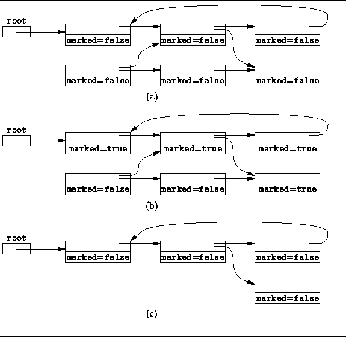

Data Structures and Algorithms
with Object-Oriented Design Patterns in Java
Data Structures and Algorithms
with Object-Oriented Design Patterns in Java
This section presents
the mark-and-sweep
garbage collection algorithm.
The mark-and-sweep algorithm was the first garbage collection algorithm
to be developed that is able to reclaim cyclic data structures. Variations of the mark-and-sweep algorithm continue to be among the most
commonly used garbage collection techniques.
Variations of the mark-and-sweep algorithm continue to be among the most
commonly used garbage collection techniques.
When using mark-and-sweep, unreferenced objects are not reclaimed immediately. Instead, garbage is allowed to accumulate until all available memory has been exhausted. When that happens, the execution of the program is suspended temporarily while the mark-and-sweep algorithm collects all the garbage. Once all unreferenced objects have been reclaimed, the normal execution of the program can resume.
The mark-and-sweep algorithm is called a tracing garbage collector because is traces out the entire collection of objects that are directly or indirectly accessible by the program. The objects that a program can access directly are those objects which are referenced by local variables on the processor stack as well as by any static variables that refer to objects. In the context of garbage collection, these variables are called the roots . An object is indirectly accessible if it is referenced by a field in some other (directly or indirectly) accessible object. An accessible object is said to be live . Conversely, an object which is not live is garbage.
The mark-and-sweep algorithm consists of two phases: In the first phase, it finds and marks all accessible objects. The first phase is called the mark phase. In the second phase, the garbage collection algorithm scans through the heap and reclaims all the unmarked objects. The second phase is called the sweep phase. The algorithm can be expressed as follows:
for each root variable r
mark (r);
sweep ();
In order to distinguish the live objects from garbage, we record the state of an object in each object. That is, we add a special boolean field to each object called, say, marked. By default, all objects are unmarked when they are created. Thus, the marked field is initially false.
An object p and all the objects indirectly accessible from p can be marked by using the following recursive mark method:
void mark (Object p)Notice that this recursive mark algorithm does nothing when it encounters an object that has already been marked. Consequently, the algorithm is guaranteed to terminate. And it terminates only when all accessible objects have been marked.if (!p.marked)
p.marked = true; for each Object q referenced by p mark (q);
In its second phase, the mark-and-sweep algorithm scans through all the objects in the heap, in order to locate all the unmarked objects. The storage allocated to the unmarked objects is reclaimed during the scan. At the same time, the marked field on every live object is set back to false in preparation for the next invocation of the mark-and-sweep garbage collection algorithm:
void sweep ()for each Object p in the heap
if (p.marked) p.marked = false else heap.release (p);
Figure  illustrates the operation of the mark-and-sweep
garbage collection algorithm.
Figure (a) shows the conditions before garbage collection begins.
In this example, there is a single root variable.
Figure (b) shows the effect of the mark phase
of the algorithm.
At this point, all live objects have been marked.
Finally, Figure (c) shows the objects left after the sweep
phase has been completed.
Only live objects remain in memory and the marked fields have
all been set to false again.
illustrates the operation of the mark-and-sweep
garbage collection algorithm.
Figure (a) shows the conditions before garbage collection begins.
In this example, there is a single root variable.
Figure (b) shows the effect of the mark phase
of the algorithm.
At this point, all live objects have been marked.
Finally, Figure (c) shows the objects left after the sweep
phase has been completed.
Only live objects remain in memory and the marked fields have
all been set to false again.

Figure: Mark-and-sweep garbage collection.
Because the mark-and-sweep garbage collection algorithm traces out the set of objects accessible from the roots, it is able to correctly identify and collect garbage even in the presence of reference cycles. This is the main advantage of mark-and-sweep over the reference counting technique presented in the preceding section. A secondary benefit of the mark-and-sweep approach is that the normal manipulations of reference variables incurs no overhead.
The main disadvantage of the mark-and-sweep approach is the fact that that normal program execution is suspended while the garbage collection algorithm runs. In particular, this can be a problem in a program that interacts with a human user or that must satisfy real-time execution constraints. For example, an interactive application that uses mark-and-sweep garbage collection becomes unresponsive periodically.
 Copyright © 1998 by Bruno R. Preiss, P.Eng. All rights reserved.
Copyright © 1998 by Bruno R. Preiss, P.Eng. All rights reserved.